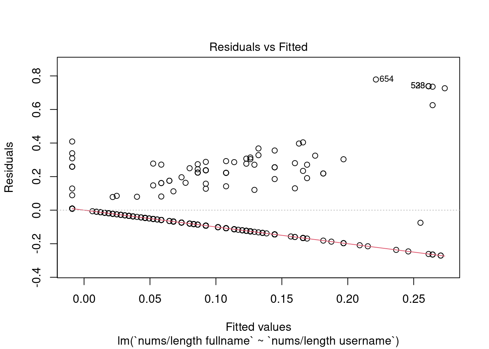
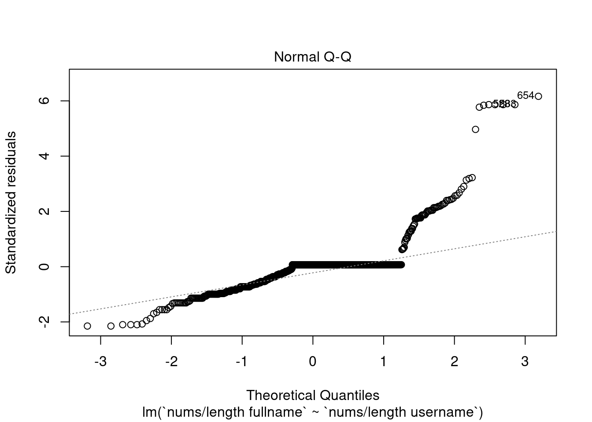
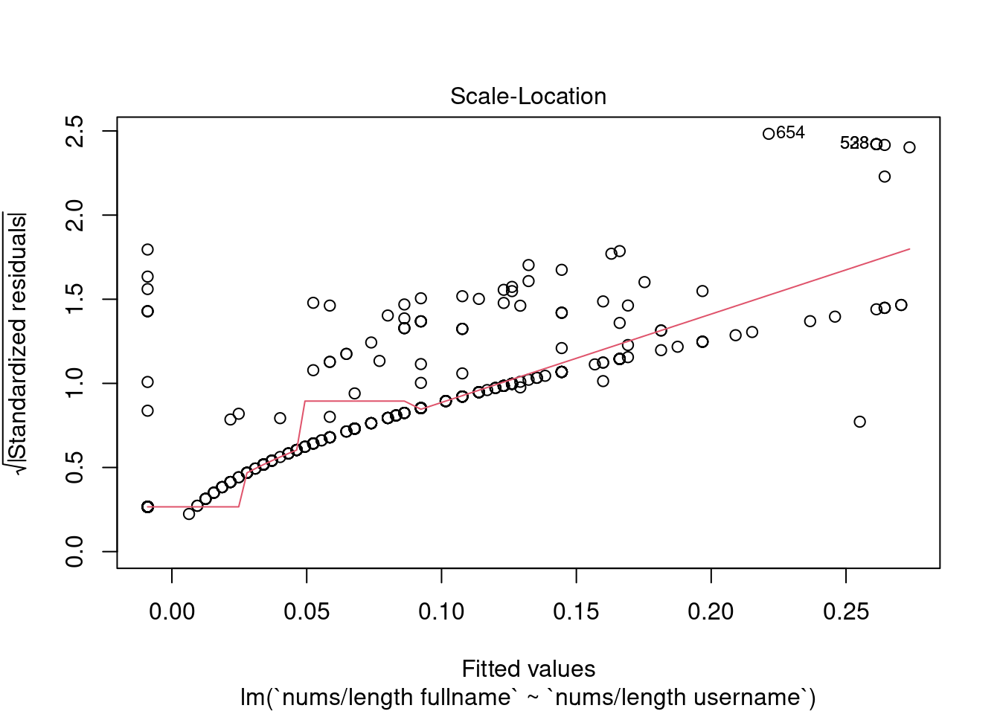
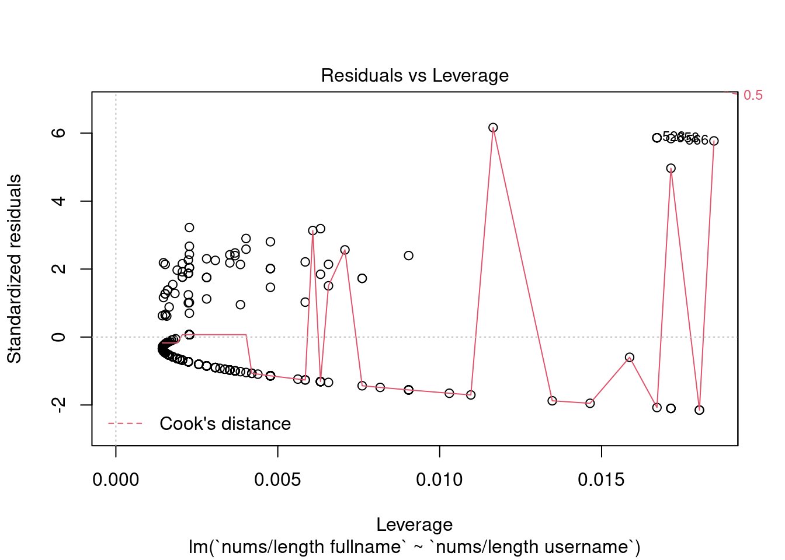
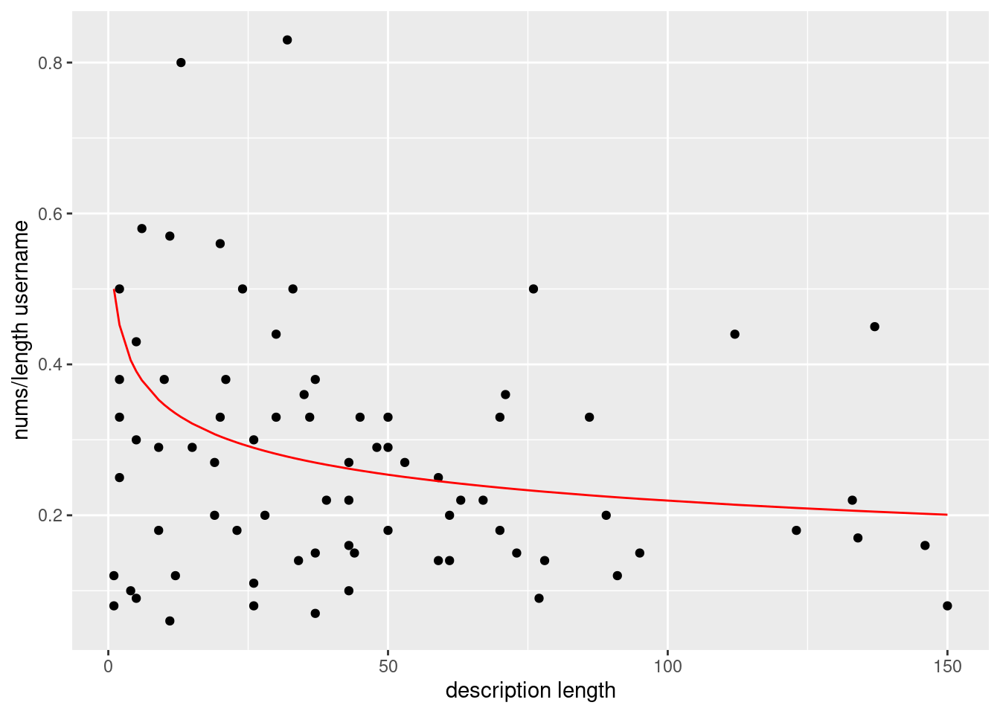

Llega la hora de meternos de lleno en el mundo de los modelos de regresión. Se trata de un campos del análisis de datos realmente valioso e interesante ya que: nos permite modelar y entender las relaciones entre variables (lo que es fundamental para comprender cómo ciertos factores afectan a otros en un sistema dado), podemos predecir valores futuros basados en datos históricos, La regresión nos proporciona herramientas para evaluar la calidad y validez de nuestros modelos, estos son de diferentes naturalezas y muy versátiles, …
El propósito final, por tanto, será encontrar modelos que dadas una serie de variables asociadas a un dataset, se ajusten a la nube de puntos generadas por las mismas, y que por tanto permita evaluar en un futuro datos que no han sido usados para generar el modelo en cuestión.
Rows: 576 Columns: 12
── Column specification ────────────────────────────────────────────────────────
Delimiter: ","
dbl (12): profile pic, nums/length username, fullname words, nums/length ful...
ℹ Use `spec()` to retrieve the full column specification for this data.
ℹ Specify the column types or set `show_col_types = FALSE` to quiet this message.
test <-read_csv("datasets/test.csv")
Rows: 120 Columns: 12
── Column specification ────────────────────────────────────────────────────────
Delimiter: ","
dbl (12): profile pic, nums/length username, fullname words, nums/length ful...
ℹ Use `spec()` to retrieve the full column specification for this data.
ℹ Specify the column types or set `show_col_types = FALSE` to quiet this message.
all_data <-rbind(train, test)
En primer lugar, para ver cuales pueden ser pares de variables interesantes de cara a representar, podemos usar pairs
El problema es que obtenemos que fake es la mejor opción de elección de atributos y sabemos que dicha variable es binaria, por lo que no se trataría de un modelo de regresión, sino de clasificación. Como este problema lo vamos a arrastrar durante esta sección, considero que una buena elección puede ser quitarnos temporalmente las variables binarias…
Parece ser que nums/length fullname y nums/length username puede ser una buena opción para comenzar. La función lm() es la función de R para ajustar modelos lineales (la más importante). La manera de llevarla a la práctica es la siguiente:
Call:
lm(formula = `nums/length fullname` ~ `nums/length username`,
data = all_data)
Residuals:
Min 1Q Median 3Q Max
-0.27048 -0.06548 0.00900 0.00900 0.77866
Coefficients:
Estimate Std. Error t value Pr(>|t|)
(Intercept) -0.008999 0.006053 -1.487 0.138
`nums/length username` 0.307118 0.022009 13.954 <2e-16 ***
---
Signif. codes: 0 '***' 0.001 '**' 0.01 '*' 0.05 '.' 0.1 ' ' 1
Residual standard error: 0.127 on 694 degrees of freedom
Multiple R-squared: 0.2191, Adjusted R-squared: 0.218
F-statistic: 194.7 on 1 and 694 DF, p-value: < 2.2e-16
La salida del resumen (summary) del modelo de regresión lineal proporciona información importante sobre la ajuste del modelo a los datos y la significancia de las variables predictoras.
Residuals (Residuos): Esta sección muestra estadísticas resumidas sobre los residuos del modelo, que son las diferencias entre los valores observados y los valores predichos por el modelo. Proporciona una idea de cómo se distribuyen los errores de predicción.
Coefficients (Coeficientes): Esta tabla presenta los coeficientes estimados para cada variable predictora en el modelo. Los coeficientes indican la magnitud y la dirección de la relación entre cada variable predictora y la variable de respuesta. Además, los valores t y los valores p asociados con cada coeficiente ayudan a evaluar la significancia estadística de las variables predictoras.
Multiple R-squared (R cuadrado múltiple): Este coeficiente de determinación indica la proporción de variabilidad en la variable de respuesta que es explicada por el modelo. Cuanto más cercano sea el R cuadrado a 1, mejor se ajusta el modelo a los datos.
F-statistic (Estadístico F): Este estadístico se utiliza para probar la significancia global del modelo. Evalúa si al menos una de las variables predictoras tiene un efecto significativo sobre la variable de respuesta. El valor p asociado indica si el modelo en su conjunto es significativo
Como se puede apreciar en el gráfico representado anteriormente, existen muchos puntos dondes nums/length fullname es igual a 0, lo que hace que la precisión de nuestro modelo de regresión se reduzca drásticamente. Una posible solución para esto podría ser eliminar dichos puntos…
Call:
lm(formula = `nums/length fullname` ~ `nums/length username`,
data = all_data_clean)
Residuals:
Min 1Q Median 3Q Max
-0.56382 -0.07045 -0.01698 0.04213 0.33955
Coefficients:
Estimate Std. Error t value Pr(>|t|)
(Intercept) 0.09203 0.03148 2.923 0.00463 **
`nums/length username` 0.75790 0.06699 11.314 < 2e-16 ***
---
Signif. codes: 0 '***' 0.001 '**' 0.01 '*' 0.05 '.' 0.1 ' ' 1
Residual standard error: 0.1404 on 72 degrees of freedom
Multiple R-squared: 0.64, Adjusted R-squared: 0.635
F-statistic: 128 on 1 and 72 DF, p-value: < 2.2e-16
¡Esto ha mejorado bastante! Este segundo modelo presenta un \(R^2\) de 0.64, es decir, el modelo es capaz de acertar los puntos en un 64% de los casos, ademas de presentar un p-value realmente correcto. Si quisieramos ver algunas de las gráficas representativas del modelo…
plot(firstModel)




Se aprecia como la última gráfica, se pueden interpretar las distancias de Cook para identificar observaciones influyentes en el modelo. Una regla general es que si la distancia de Cook para una observación es mayor que 1, esta observación puede tener una influencia desproporcionada en el modelo y podría considerarse influyente. Sin embargo, el umbral para considerar una observación como influyente puede variar según el contexto del problema y la cantidad de datos disponibles. Ademas, en el propio gráfico R nos muestra una serie de puntos etiquetados que representan aquellos que hacen que el modelo pierda eficacia, por lo que una posible solución de mejora del modelo de regresión sería quitarnos del medio dichos puntos.
Podemos probar ahora a realizar un modelo entre description length y nums/length username.
library(dplyr)
Attaching package: 'dplyr'
The following objects are masked from 'package:stats':
filter, lag
The following objects are masked from 'package:base':
intersect, setdiff, setequal, union
Formula: all_data_clean_2$`nums/length username` ~ 1/(1 + all_data_clean_2$`description length`^c)
Parameters:
Estimate Std. Error t value Pr(>|t|)
c 0.27570 0.02909 9.476 1.86e-14 ***
---
Signif. codes: 0 '***' 0.001 '**' 0.01 '*' 0.05 '.' 0.1 ' ' 1
Residual standard error: 0.169 on 75 degrees of freedom
Number of iterations to convergence: 4
Achieved convergence tolerance: 3.372e-06
Haciendo uso de nls y de una función exponencial hemos logrado obtener un resultado mucho mejor, como se puede ver visualmente.
all_data_clean_2 %>%ggplot(aes(x =`description length`, y =`nums/length username`)) +geom_point() +geom_line(aes(x =`description length`, y =predict(thirdModelUpdated)),color="red")

Con esto terminamos la sección de modelos de regresión. Aunque esta vez hemos encontrado un poco más de dificultades debido a la naturaleza del dataset del cual disponemos, hemos logrado encontrar algunos modelos que muestran realmente información interesante de manera visual entre enfrentamientos de variables de nuestro conjunto de datos. Pasamos ahora a la parte de series temporales, conjuntos de datos que representan observaciones recopiladas en intervalos de tiempo regulares. Este campo de estudio se centra en el análisis, la modelización y la predicción de datos que varían con el tiempo.